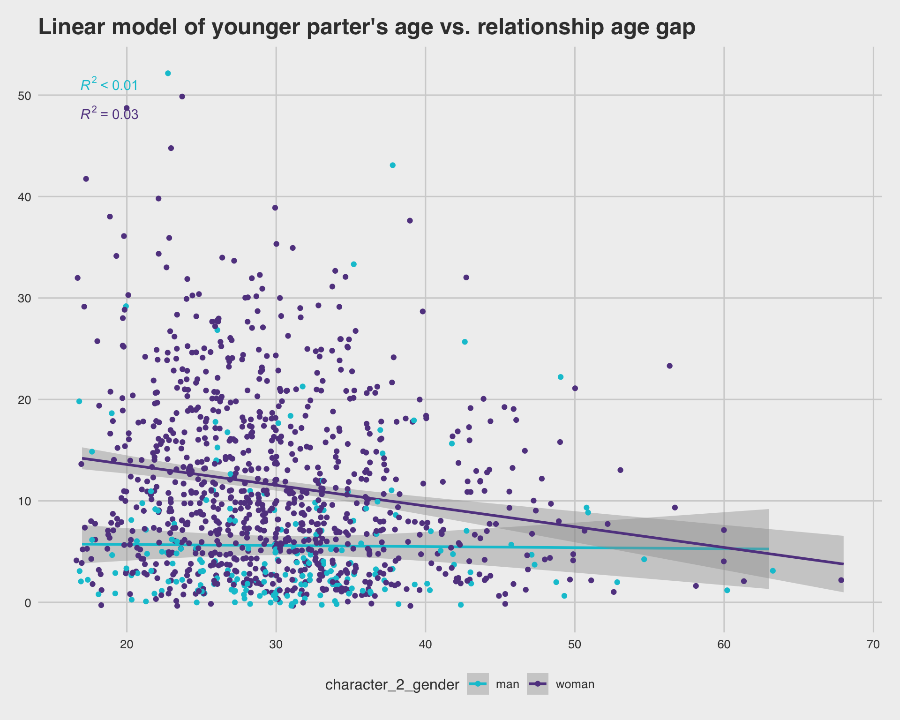

This is the TidyTuesday data set for February 14th, 2023. Data consist of observations pertaining to age differences in couples from Hollywood movies spanning almost an entire century.
Attaching package: 'plotly'
The following object is masked from 'package:ggplot2':
last_plot
The following object is masked from 'package:stats':
filter
The following object is masked from 'package:graphics':
layout
library(skimr)library(ggpmisc)
Loading required package: ggpp
Attaching package: 'ggpp'
The following object is masked from 'package:ggplot2':
annotate
Rows: 1155 Columns: 13
── Column specification ────────────────────────────────────────────────────────
Delimiter: ","
chr (6): movie_name, director, actor_1_name, actor_2_name, character_1_gend...
dbl (5): release_year, age_difference, couple_number, actor_1_age, actor_2_age
date (2): actor_1_birthdate, actor_2_birthdate
ℹ Use `spec()` to retrieve the full column specification for this data.
ℹ Specify the column types or set `show_col_types = FALSE` to quiet this message.
Data exploration
skim(age_gaps)
Data summary
Name
age_gaps
Number of rows
1155
Number of columns
13
_______________________
Column type frequency:
character
6
Date
2
numeric
5
________________________
Group variables
None
Variable type: character
skim_variable
n_missing
complete_rate
min
max
empty
n_unique
whitespace
movie_name
0
1
2
43
0
830
0
director
0
1
3
31
0
510
0
actor_1_name
0
1
6
22
0
567
0
actor_2_name
0
1
7
27
0
647
0
character_1_gender
0
1
3
5
0
2
0
character_2_gender
0
1
3
5
0
2
0
Variable type: Date
skim_variable
n_missing
complete_rate
min
max
median
n_unique
actor_1_birthdate
0
1
1889-04-16
1996-06-01
1964-10-03
562
actor_2_birthdate
0
1
1906-10-06
1996-11-11
1974-07-30
640
Variable type: numeric
skim_variable
n_missing
complete_rate
mean
sd
p0
p25
p50
p75
p100
hist
release_year
0
1
2000.80
16.37
1935
1997
2004
2012
2022
▁▁▁▆▇
age_difference
0
1
10.42
8.51
0
4
8
15
52
▇▃▂▁▁
couple_number
0
1
1.40
0.75
1
1
1
2
7
▇▁▁▁▁
actor_1_age
0
1
40.64
10.42
18
33
39
47
81
▂▇▅▂▁
actor_2_age
0
1
30.21
7.50
17
25
29
34
68
▇▇▂▁▁
By using skim(), I can see many interesting things about the data:
The mean age difference between couples is about 10 years.
There are 830 unique movies listed, spanning from 1935 to 2022, with most movies only having one couple each.
Some actor names are repeated upwards of 20 times, showing that they have been involved in multiple couples.
Ideas for analysis
I will start by designating sexuality of each couple into three groups (straight, gay, sapphic) because I am interested to see how many queer couples there are. If there are enough, we could look at age gap differences between each group.
I will then determine which gender is the oldest in each pair because I hypothesize that men will be older more of the time.
I will start with these two questions for now and see where they take me
Mutate data
Classifying sexuality of each couple
Here I will create a new variable called sexuality based on whether each couple is of same or opposite gender, creating three labels for these relationships: straight (man & woman), gay (man & man), and sapphic (woman & woman)
I will also look at how many observations there are for each sexuality.
# A tibble: 2 × 3
character_1_gender n proportion
<chr> <int> <dbl>
1 man 941 0.815
2 woman 214 0.185
As you can see here, men in Hollywood are much more likely to be older than their partner than women are. In this data set, men were older than their partner 80% of the time.
Data visualization
Difference in average age gaps between straight, gay, and sapphic couples
age_gaps_sexuality %>%ggplot(aes(sexuality, age_difference, color = sexuality)) +geom_boxplot() + ggthemes::theme_fivethirtyeight()
It appears that gay couples have a higher average age gap than other sexualities, but remember that they make up less than 1% of observations
Proportion of sexualities in couples throughout the years
age_gaps_sexuality %>%ggplot(aes(y = couple_number, x = release_year, fill = sexuality)) +geom_bar(stat ="identity") +scale_x_continuous(name ="Year Released", breaks =seq(1930,2022,10)) + ggthemes::theme_fivethirtyeight()
Only straight couples were documented in Hollywood prior to the 1990s. Queer couplings began to be documented in the 1990s and early 2000s, but still make up a small portion of couples which we saw earlier. We can also note that queer couplings started to pop up around the time that couple numbers in Hollywood dramatically increased in the late 1990s.
Difference in age gaps between older men and women
age_gaps %>%ggplot(aes(character_1_gender, age_difference, color = character_1_gender)) +geom_boxplot() +scale_color_manual(values =c('#00C4D4', '#634490'))
Within Hollywood, older men tend to have a higher age gap with their partner than older women do.
Difference in age gaps between younger men and women
age_gaps %>%ggplot(aes(character_2_gender, age_difference, color = character_2_gender)) +geom_boxplot() +scale_color_manual(values =c('#00C4D4', '#634490'))
Within Hollywood, younger men tend to have a smaller age gap with their partners compared to younger women who have a larger average age gap.
Linear regression of age vs age gap between men and women
age_gaps %>%ggplot(aes(actor_1_age, age_difference, color = character_1_gender)) +stat_poly_line() +stat_poly_eq() +geom_jitter() +scale_color_manual(name ="Gender", values =c('#00C4D4', '#634490')) + ggthemes::theme_fivethirtyeight() +labs(title ="Linear model of older partner's age vs. relationship age gap")
Men in Hollywood who are older are more likely to have an increased age gap in their relationships as they age.
age_gaps %>%ggplot(aes(actor_2_age, age_difference, color = character_2_gender)) +stat_poly_line() +stat_poly_eq() +geom_jitter() +scale_color_manual(values =c('#00C4D4', '#634490')) + ggthemes::theme_fivethirtyeight() +labs(title ="Linear model of younger parter's age vs. relationship age gap")

We do not see this same trend with the younger partners. There are less men who are younger than their partner, and there seems to be no indication that their age is a determining factor in their relationship age gap.
There are far more women who are younger than their partner, and overall it appears there are less women in couples past the age of 40, compared to the first scatter plot where men are in couples well past their 40s.
Discussion and conclusions
What I learned from looking at this data of Hollywood couples on the same movie set:
98% of documented Hollywood couples were heterosexual
Men were more likely to date someone younger than them then women were
Older men had a higher average age gap in their relationships, meaning they were more likely to date women much younger than them than older women were to date much younger men
Older partners of both genders showed an increase in relationship age gaps as their own age increased, although this was much more pronounced for men, meaning that as these men age, they continue to date young women
From this data exploration, I have concluded that on average, men in Hollywood tend to date much younger women than themselves. They also continue to date much younger women as they age.